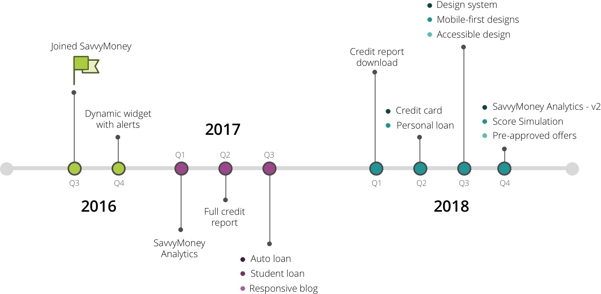

SavvyMoney Inc.
UX DesignSavvyMoney Inc. is a B-B-C fin-tech startup. It offers a comprehensive credit score solution (score, report and monitoring) to financial institutions (FI's) by integrating within their online and mobile banking platforms. It also offers them (FI's) a business intelligence tool, SavvyMoney Analytics, to analyze the credit portfolio of their member-base and explore lending opportunities.
{kind=link}
my role: UX designer -> evangelist -> analyst
When I joined SavvyMoney in 2016, I was the only designer on the team. I started as a UX designer focusing mainly on enhancing the users’ experience with the credit score application. Since then, not only have I grown my role, but also contributed towards creating a strong design culture in the company. I work within the product team, lead a team of designers and UI developers and work closely with the partnerships team to plan and implement enhancements and/or new feature roll-outs. I also wear the business analyst hat and analyze the impact of design interventions and evaluate growth of both product and partners.
design-led product development process
I take pride in working closely with the product team and institutionalizing a product development process which is pro-design, end-to-end. The human-centered design philosophy forms the foundation of the process that instills the idea of technology and design working together for successful releases.

product evolution
When I started, the credit application was limited to the credit score, factors that affect the score, credit monitoring, a page dedicated to the FI's offers and a blog which was largely un-responsive. I have worked on the complete overhaul of the application along with designing additional features.

{kind=link}
A snapshot of the major product releases are described below. Each of these projects followed the product development process while improving upon the process or adding new tools for efficiency.
credit score, delivered straight to online banking.
{kind=link}
- Score widget integrated within online and mobile banking using iframe solutions and apis.
- New design resulted in 30 fold increase in user engagement.
- Responsive components provide flexibilty over widget dimensions.
- Live on over 125+ partners across 10+ online banking platforms.
“I think I'm excited about it (widget). I think that's a great thing for people to monitor their own credit this way.” - User
monitor credit information in one place with full credit report.
{kind=link}
- Rollout increased product value and thus, partner buy-in.
- Used by over 250,000 users to monitor credit and information on their credit files.
personalised offers and savings calculators
{kind=link}
- Standalone calculators and offers pages per product type - auto loans, credit cards, personal loans, student loans and HELOC’s.
- Makes it easy to compare offers with existing debt making savings (on refinance/ debt consolidation) transparent.
Making way for design system and accessibility
While working on design projects, we occassionally ran in to the issue that same components were not consistent in the design source files. Similar problem co-existed within the dev team too where eash new UI developer would re-code the components. This resulted in the designs not only looking different from production but similar components looked different on different pages.
As a solution to the problem, we introduced a component library which helped in mainiting a level on consistency within the design team but dev inconsistency was still a problem. As we moved our web technology from angular to react, this was a opportunity to set up the design system that can be used by everyone as a single source of truth. Hence, the birth of,
OCTANE - Design System by SavvyMoney
The success of the system lies in the fact that early on dev team recognized the value of the system as they added new UI developers to the projects and were now seeing reduced development time. All this while developing the components for the design system.
{kind=link}
ACCESSIBILITY
Since SavvyMoney works directly with financial institutions, it has become mandatory for us to be ADA compliant by 2020. The design system helped us in taking the first steps towards that. The component being built in to system follow the WCAG 2.0 guidelines with spcific focus on contrast, target sizes and spacing between components. Next steps are to define focus states for all pages and text for keyboard accessibility.